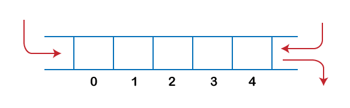
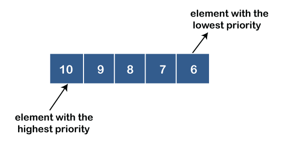

The dequeue stands for Double Ended Queue. In the queue, the insertion takes place from one end while
the deletion takes place from another end. The end at which the insertion occurs is known as the rear
end whereas the end at which the deletion occurs is known as front end.
Deque is a linear data structure in which the insertion and deletion operations are performed
from both ends. We can say that deque is a generalized version of the queue.
Let's look at some properties of deque.
Deque can be used both as stack and queue as it allows the insertion and deletion
operations on both ends.
In deque, the insertion and deletion operation can be performed from one side. The stack follows the
LIFO rule in which both the insertion and deletion can be performed only from one end; therefore, we
conclude that deque can be considered as a stack.
In deque, the insertion can be performed on one end, and the deletion can be done on another end. The
queue follows the FIFO rule in which the element is inserted on one end and deleted from another end.
Therefore, we conclude that the deque can also be considered as the queue.
There are two types of Queues, Input-restricted queue, andoutput-restricted queue.
1.Input-restricted queue: The input-restricted queue means that some restrictions are
applied to the insertion. In input-restricted queue, the insertion is applied to one end while
the deletion is applied from both the ends.
2.Output-restricted queue: The output-restricted queue means that some restrictions are
applied to the deletion operation. In an output-restricted queue, the deletion can be applied
only from one end, whereas the insertion is possible from both ends.

Operations on Deque
The following are the operations applied on deque:
Insert at front
Delete from end
insert at rear
delete from rear
Other than insertion and deletion, we can also perform peek operation in deque. Through peek
operation, we can get the front and the rear element of the dequeue.
We can perform two more operations on dequeue:
isFull(): This function returns a true value if the stack is full; otherwise, it returns
a false value.
isEmpty(): This function returns a true value if the stack is empty; otherwise it returns
a false value.
Memory Representation
The deque can be implemented using two data structures, i.e., circular array, and doubly linked list. To
implement the deque using circular array, we first should know what is circular array.
What is a circular array?
An array is said to be circular if the last element of the array is connected to the first element of
the array. Suppose the size of the array is 4, and the array is full but the first location of the array
is empty. If we want to insert the array element, it will not show any overflow condition as the last
element is connected to the first element. The value which we want to insert will be added in the first
location of the array.
Applications of Deque
ThIt can be used as a palindrome checker means that if we read the string from both ends, then
the string would be the same.
It can be used as a palindrome checker means that if we read the string from both ends, then the
string would be the same.
It can be used for multiprocessor scheduling. Suppose we have two processors, and each processor
has one process to execute. Each processor is assigned with a process or a job, and each process
contains multiple threads. Each processor maintains a deque that contains threads that are ready
to execute. The processor executes a process, and if a process creates a child process then that
process will be inserted at the front of the deque of the parent process. Suppose the processor
P2 has completed the execution of all its threads then it steals the thread from the rear end of
the processor P1 and adds to the front end of the processor P2. The processor P2 will take the
thread from the front end; therefore, the deletion takes from both the ends, i.e., front and
rear end. This is known as the A-steal algorithm for scheduling.
Implementation of Deque using a circular array
The following are the steps to perform the operations on the Deque:
Enqueue operation
1.Initially, we are considering that the deque is empty, so both front and rear are set to -1,
i.e., f = -1 and r = -1.
2.As the deque is empty, so inserting an element either from the front or rear end would be the
same thing. Suppose we have inserted element 1, then front is equal to 0, and the rear is also
equal to 0.
3.Suppose we want to insert the next element from the rear. To insert the element from the rear
end, we first need to increment the rear, i.e., rear=rear+1. Now, the rear is pointing to the
second element, and the front is pointing to the first element.
4.Suppose we are again inserting the element from the rear end. To insert the element, we will
first increment the rear, and now rear points to the third element.
5.If we want to insert the element from the front end, and insert an element from the front, we
have to decrement the value of front by 1. If we decrement the front by 1, then the front points
to -1 location, which is not any valid location in an array. So, we set the front as (n -1),
which is equal to 4 as n is 5. Once the front is set, we will insert the value as shown in the
below figure:
Dequeue Operation
1.If the front is pointing to the last element of the array, and we want to perform the delete
operation from the front. To delete any element from the front, we need to set front=front+1.
Currently, the value of the front is equal to 4, and if we increment the value of front, it
becomes 5 which is not a valid index. Therefore, we conclude that if front points to the last
element, then front is set to 0 in case of delete operation.
2.If we want to delete the element from rear end then we need to decrement the rear value by 1,
i.e., rear=rear-1 as shown in the below figure:
3.If the rear is pointing to the first element, and we want to delete the element from the rear
end then we have to set rear=n-1 where n is the size of the array as shown in the below figure:
What is a priority queue?
A priority queue is an abstract data type that behaves similarly to the normal queue except that each
element has some priority, i.e., the element with the highest priority would come first in a priority
queue. The priority of the elements in a priority queue will determine the order in which elements are
removed from the priority queue.
The priority queue supports only comparable elements, which means that the elements are either arranged
in an ascending or descending order.
For example, suppose we have some values like 1, 3, 4, 8, 14, 22 inserted in a priority queue with an
ordering imposed on the values is from least to the greatest. Therefore, the 1 number would be having
the highest priority while 22 will be having the lowest priority.
Characteristics of a Priority queue
Every element in a priority queue has some priority associated with it.
An element with the higher priority will be deleted before the deletion of the lesser priority.
If two elements in a priority queue have the same priority, they will be arranged using the FIFO
principle.
Types of Priority Queue
Ascending order priority queue: In ascending order priority queue, a lower priority
number is given as a higher priority in a priority. For example, we take the numbers from 1 to 5
arranged in an ascending order like 1,2,3,4,5; therefore, the smallest number, i.e., 1 is given
as the highest priority in a priority queue.
Descending order priority queue: In descending order priority queue, a higher priority
number is given as a higher priority in a priority. For example, we take the numbers from 1 to 5
arranged in descending order like 5, 4, 3, 2, 1; therefore, the largest number, i.e., 5 is given
as the highest priority in a priority queue.

Representation of priority queue
Now, we will see how to represent the priority queue through a one-way list.
We will create the priority queue by using the list given below in which INFO list contains the data
elements, PRN list contains the priority numbers of each data element available in the INFO list, and
LINK basically contains the address of the next node.
Let's create the priority queue step by step.
In the case of priority queue, lower priority number is considered the higher priority, i.e., lower
priority number = higher priority.
Step 1: In the list, lower priority number is 1, whose data value is 333, so it will be inserted
in the list as shown in the below diagram:
Step 2: After inserting 333, priority number 2 is having a higher priority, and data values
associated with this priority are 222 and 111. So, this data will be inserted based on the FIFO
principle; therefore 222 will be added first and then 111.
Step 3: After inserting the elements of priority 2, the next higher priority number is 4 and data
elements associated with 4 priority numbers are 444, 555, 777. In this case, elements would be inserted
based on the FIFO principle; therefore, 444 will be added first, then 555, and then 777.
Step 4: After inserting the elements of priority 4, the next higher priority number is 5, and the
value associated with priority 5 is 666, so it will be inserted at the end of the queue.
Implementation of Priority Queue
The priority queue can be implemented in four ways that include arrays, linked list, heap data structure
and binary search tree. The heap data structure is the most efficient way of implementing the priority
queue, so we will implement the priority queue using a heap data structure in this topic. Now, first we
understand the reason why heap is the most efficient way among all the other data structures.
Analysis of complexities using different implementations
Implementation
add
Remove
peek
Linked list
O(1)
O(n)
O(n)
Binary heap
O(logn)
O(logn)
O(1)
Binary search tree
O(logn)
O(logn)
O(1)
What is Heap?
A heap is a tree-based data structure that forms a complete binary tree, and satisfies the heap
property. If A is a parent node of B, then A is ordered with respect to the node B for all nodes A and B
in a heap. It means that the value of the parent node could be more than or equal to the value of the
child node, or the value of the parent node could be less than or equal to the value of the child node.
Therefore, we can say that there are two types of heaps:
Max heap: The max heap is a heap in which the value of the parent node is greater than the value
of the child nodes.
Min heap: The min heap is a heap in which the value of the parent node is less than the value of
the child nodes.